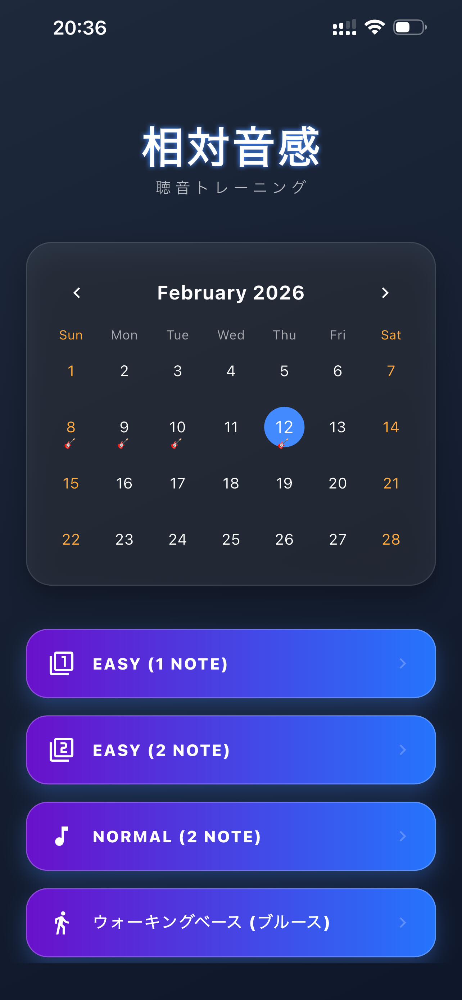
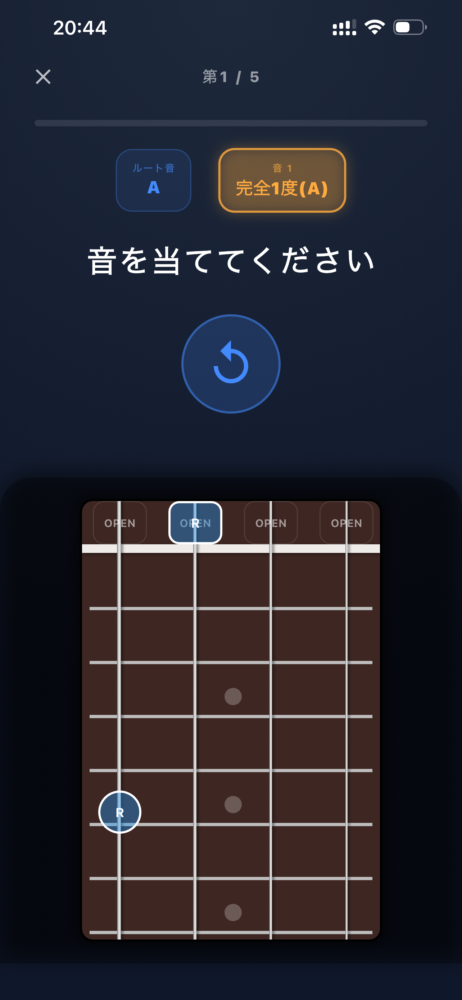
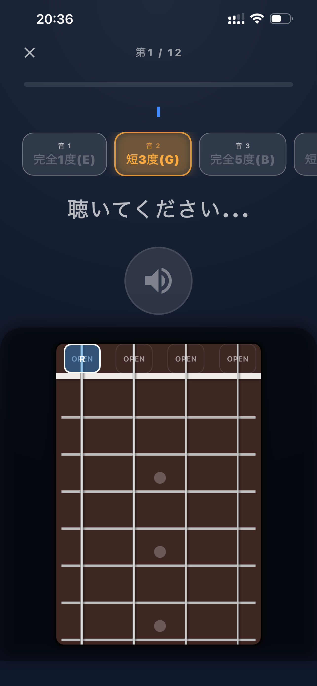
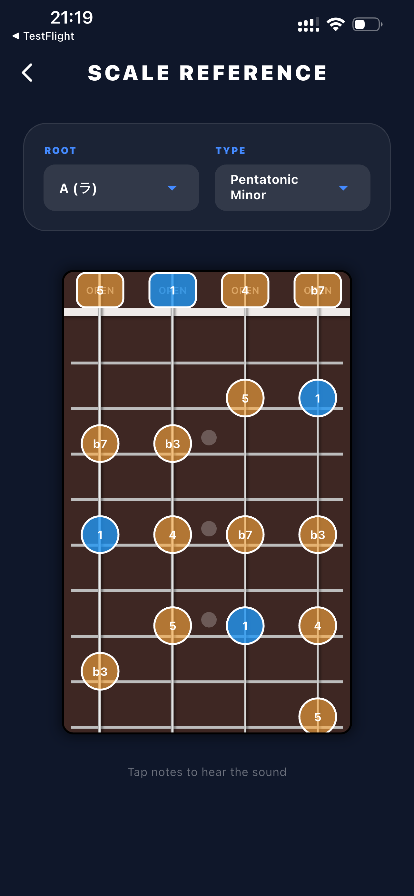

Master Your Fretboard.
Elevate Your Play.
指板をマスターし、
演奏レベルを引き上げる。
Master relative pitch with realistic bass sounds. An ear training app for bassists with walking bass training features. リアルなベース音源で相対音感を鍛える。ウォーキング・ベース・トレーニング機能を搭載した、ベーシストのための聴音アプリ。





Powerful Tools for Your Ears 耳を鍛える強力なツール
Everything a bassist needs in one app. ベーシストに必要な全ての機能をこの一つに。
Realistic Bass Samples リアルなベース・サンプル
Uses realistic 4-string bass sounds (E1-G3). Develop a professional ear with the optimal range for the instrument.
リアルな4弦ベース音源（E1〜G3）を使用。実際の楽器を想定した最適な音域で、プロの耳を養います。
Precision Fretboard UI 精密な指板UI
An interface that faithfully reproduces the bass fretboard. Train directly with actual fingerings.
ベースの指板を忠実に再現したインターフェース。音を聴くだけでなく、実際の運指と直結したトレーニングが可能です。
Scale & Chord Reference スケール＆コード・リファレンス
Check major/minor scales and various chords (7th, m7b5, etc.) on the fretboard. Degree display deepens theory understanding.
メジャー/マイナースケールや各種コード（7th, m7b5等）の形を指板上で確認。ルートからの度数表示で音楽理論の理解も深まります。
Adaptive Difficulty 適応型難易度
Step up from single-note identification for beginners to continuous listening for intermediate and advanced players.
初心者向けの単音当てから、中〜上級者向けの連続聴音まで。自分のレベルに合わせてステップアップ。
Progress Tracking 進捗履歴管理
Manage daily training with a calendar. Visualize your growth and maintain motivation.
日々のトレーニング実績をカレンダーで管理。自分の成長を視覚化し、モチベーションを維持できます。
Global Ready グローバル対応
Supports both CDE and Do-Re-Mi notation. Multi-language support for Japanese, English, and Vietnamese.
CDE表記、ドレミ表記の両方に対応。日本語・英語・ベトナム語のマルチランゲージ・サポート。
Ad-Free Focus 広告なしで集中
Sophisticated design to help you focus on training. All features available for free.
トレーニングに集中できるよう、洗練されたデザイン。無料ですべての機能を利用可能。
Master Walking Bass Lines ウォーキング・ベース・ラインをマスターする
Learn jazz and blues lines by ear and move your fingers. Practical walking bass mode based on chord progressions. ジャズやブルースのラインを耳で覚え、指を動かす。コード進行に基づいた実践的なウォーキング・ベース・モードを搭載。
- Practice based on 12-bar blues progressions 12小節ブルース進行に基づいた実践ワーク
- Support for Major / Minor / Dominant 7th styles Major / Minor / Dominant 7th 各種スタイル対応
- Real-time chord degree (I, IV, V) display リアルタイムなコード・ディグリー（I, IV, V）表示
- Musical line generation including chromatic approaches クロマチック・アプローチを含む音楽的なライン生成
Jazz & Blues
Practice over real progressions.
Unlock Your Musical Potential 音楽的な可能性を解き放つ
Relative pitch is the key to better ensemble and solo play. 相対音感は、より良いアンサンブルとソロプレイの鍵です。